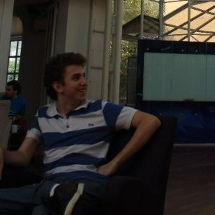

Luis Eduardo Brito
Co-Founder at Liquiditi. Software engineer and founder focused on financial infrastructure, cloud systems, and network security.
Sao Paulo, Brazil

Contact
Skills
- Software Engineering
- Cloud Infrastructure
- Network Security
Languages
- Portuguese, native or bilingual
- English, full professional
- Spanish, elementary
Experience
Co-Founder, Liquiditi
to present
Building financial products that help teams move money and operate with less friction.
Co-Founder, Bit Capital
to
Open banking platform backed by blockchain technology for enterprise financial services. Later acquired by Ame Digital.
Co-Founder and Technology Advisor, NuPay for Business
to
Formerly Spin Pay. The company was later acquired by Nubank and rebranded as NuPay for Business.
Innovation Consultant, nxtep.io
to
Advised startups on cloud and financial services, team building, and infrastructure on Google Cloud, Amazon Web Services, and Microsoft Azure.
CTO and Co-Founder, Devnup IT Solutions
to
Led cloud web products, native mobile apps, and DevOps for highly available infrastructure used in indoor and outdoor data systems.
Software Engineer, Clube da Entrega
to
Built delivery and routing systems for the 2014 Brazil World Cup International Broadcasting Center, including real-time logistics analytics.
Education
Computer Engineering, Universidade Estadual de Campinas
Bachelor's degree, incomplete. to